Target Password Managers:
The following password managers with their corresponding versions were evaluated:
| Product | Version |
| 1Password4 for Windows | 4.6.2.626 |
| 1Password7 for Windows | 7.2.576 |
| Dashlane for Windows | 6.1843.0 |
| KeePass Password Safe | 2.40 |
| LastPass for Applications | 4.1.59 |
Security of Password Managers in the Non-Running State
We first consider the security of password managers when they are not running. We focus on the attack vector of compromising passwords from disk. Unless password managers have severe vulnerabilities such as logging passwords to unencrypted log files or other egregious issues, the password managers’ defenses against the disk attack surface rest on the cryptography used to protect the password database. Here, we examine which algorithm each password manager uses to transform the master password into an encryption key, and whether the algorithm and number of iterations is severely lacking in its ability to resist contemporary cracking attacks.
Table 2, below, outlines the key expansion algorithm type used and number of iterations in each password manager’s default configuration. With regard to key expansion recommendations set by NIST [14]we found that each key expansion algorithm used in the password managers was acceptable and that the number of iterations adequate. We concluded that the password managers were secure against compromising passwords from disk as the software is not running, and that brute forcing the encrypted password entries on disk would be computationally prohibitive, although not impossible if given enough computing resources. Given this, we moved on to the attack surface of passwords stored in memory while the password managers are running.
| Password Manager | Key Expansion Algorithm | Iterations |
| 1Password4 | PBKDF2-SHA256 | 40,000 [15] |
| 1Password7 | PBKDF2-SHA256 | 100,000 [16] |
| Dashlane | Argon2 | 3 [17] |
| KeePass | AES-KDF | 60,000 [18] |
| LastPass | PBKDF2-SHA256 | 100,100 [19] |
Table 2. Each password managers default key expansion algorithm and number of iterations.
Security of Password Managers in Running States
We expected and found that all password managers reviewed sufficiently protect the master password and individual passwords while they are notrunning. The remaining bulk of our assessment of password managers in the running state was focused on the effectiveness of the locked state and whether the unlocked state left the minimum possible amount of sensitive information in memory. The following sections outline violations of our proposed security guarantees of password managers in a running locked and unlocked state.
1Password4 (Version: 4.6.2.626)
We assessed the security of 1Password4 while running and found reasonable protections against exposure of individual passwords in the unlocked state; unfortunately, this was overshadowed by its handling of the master password and several broken implementation details when transitioning from the unlocked to the locked state. On the positive side, we found that as a user accesses different entries in 1Password4, the software is careful to clear the previous unencrypted password from memory before loading another. This means that only one unencrypted password can be in memory at once. On the negative side, the master password remains in memory when unlocked (albeit in obfuscated form) and the software fails to scrub the obfuscated password memory region sufficiently when transitioning from the unlocked to the locked state. We also found a bug where, under certain user actions, the master password can be left in memory in cleartext even while locked.
Failure to Scrub Obfuscated Master Password from Memory
It is possible to recover and deobfuscate the master password from 1Password4 since it is not scrubbed from memory after placing the password manager in a locked state. Given a scenario where a user has unlocked 1Password4 and then placed it back into a locked state, 1Password4 will prompt for the master password again as shown in Figure 1below. However, 1Password4 retains the master password in memory, although in an encoded/obfuscated format as shown in Figure 2.
Figure 1. 1Password4 in a locked state awaiting master password input.
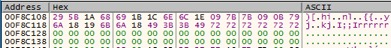
Figure 2. Encoded master password present in memory while 1Password4 is in a locked state.
We can use this information to intercept normal workflows in which 1Password4 calls RtlRunEncodeUnicodeString and RtlRunDecodeUnicodeString to obfuscate the master password to instead reveal the already present, but encoded master password into cleartext (Figure 3).
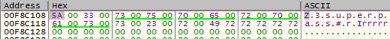
Figure 3. Master password revealed after the expected RtlRunEncodeUnicodeString and RtlRunDecodeUnicodeString was reversed, thereby forcing 1Password4 to decode the encoded master password that was not scrubbed from memory.
Copying the Current Password Entry from Memory
Only entries that are actively being interacted with exist in memory as plaintext. Figure 4is an example of an entry in memory as its being interacted with. Once 1Password4 is locked, the memory region is deallocated . Note that the deallocated region is not first scrubbed, however the Windows memory manager will zero out any freed pages of memory before making them available for re-allocation by the Windows memory manager.
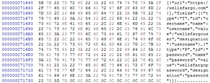
Figure 4. Password entry in memory during active interaction.
1Password7 (Version: 7.2.576)
After assessing the legacy 1Password4, we moved on to 1Password7, the current release. Surprisingly, we found that it is less secure in the running state compared to 1Password4. 1Password7 decrypted all individual passwords in our test database as soon as it is unlocked and caches them in memory, unlike 1Password4 which kept only one entry at a time in memory. Compounding this, we found that 1Password7 scrubs neither the individual passwords, the master password, nor the secret key (an extra field introduced in 1Password6 that combines with the master password to derive the encryption key) from memory when transitioning from unlocked to locked. This renders the “lock” button ineffective; from the security standpoint, after unlocking and using 1Password7, the user must exit the software entirely in order to clear sensitive information from memory as locking should.
It appears 1Password may have rewritten their software to produce 1Password7 without implementing secure memory management and secrets scrubbing workflows present in 1Password4 and abandoning the distinction between a ‘running unlocked’ and ‘running locked’ state in terms of secrets exposure. Interestingly, this is not the case. Prior marketing material for 1Password claimed [20]to feature Intel SGX technology. This technology protects secrets inside secure memory enclaves so that other processes and even higher privileged components (such as the kernel) cannot access them. Were SGX to be implemented correctly, 1Password7 would have been the most secure password manager in our research by far. Unfortunately, SGX was only supported as a beta feature in 1Password6 and early versions of 1Password7, and was dropped for later versions. This was only evident from gathering the details about it on a 1Password support forum [21].
Exposure of Cleartext Master Password, Secret Key and Entries in Memory
As stated before, all secrets are exposed by 1Password7 when in an unlocked and locked state. To demonstrate the severity of this issue we created proof of concept code to read 1Password7’s memory address space to extract these items. The proof of concept applications ran in the existing user context (which was an ordinary non-administrative user).
Show below is 1Password7 in a locked state, Figure 5(having previously been unlocked but then again locked) awaiting password entry to unlock it.
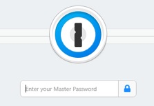
Figure 5. 1Password7 in a locked state, having previously been open and then locked.
Figure 6 illustrates the automated retrieval of the master password.
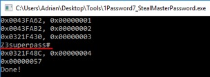
Figure 6. Extracting the master password from a locked 1Password7 instance
Figure 7 shows the extraction of the secret key that is needed along with the master password to unlock an encrypted database, and Figure 8shows the automated extraction of secret entries.
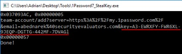
Figure 7. Extracting the secret key from 1Password7 in a locked state.
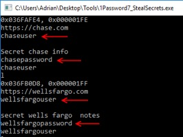
Figure 8. Extracting password entries from a locked instance of 1Password7.
The memory “hygiene” of 1Password7 is so lacking, that it is possible for it to leak passwords from memory without an intentional attack at all. During our evaluation of 1Password7, we encountered a system stop error (kernel mode exception) on our Windows 10 workstation, from an unrelated hardware issue, that created a full memory debug dump to disk. While examining this memory dump file, we came across our secrets that 1Password7 held cleartext, in memory, in a locked state when the stop error occurred (Figure 9).
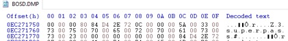
Figure 9. Windows 10 crash dump file contained secrets 1Password7 held in memory in a locked state.
For all password managers that leave secrets in memory, this creates a threat model where secrets may be extracted in a non-running state as a by-product of system activity and/or crash/debug log files. Moreover, some companies have a policy to image workstations that have had malware encounters as part of the incident response procedure. A user that happened to be running 1Password7 while this procedure was initiated should assume that all secrets have been compromis
Dashlane (Version: 6.1843.0)
In our Dashlane evaluation, we noted workflows that indicate focus was placed on concealing secrets in memory to reduce their likelihood of extraction. Also, unique to Dashlane, was the usage of memory/string and GUI management frameworks that prevented secrets from being passed around to various OS API’s that could expose them to eavesdropping by trivial malware.
Similar to 1Password4, Dashlane exposes only the active entry a user is interacting with. So, at most, the last active entry is exposed in memory while Dashlane is in an unlocked and locked state. However, once a user updates any information in an entry, Dashlane exposes the entire database plaintext in memory and it remains there even after Dashlane is logged out of or ‘locked’.
Exposure of Cleartext Entries in Memory
Password entries in Dashlane are stored in an XML object. Upon interacting with any entry this XML object becomes exposed in cleartext and can be easily extracted in both locked and unlocked states. Figure 10, below, is an example of a portion of this XML data structure.
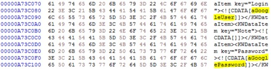
Figure 10. Excerpt of a fully decrypted Dashlane XML password database in an unlocked and locked state.
Knowing that this data structure exists in a locked state, we then created a proof of concept application to extract it from a locked instance of Dashlane. Figure 11, below, is a locked instance of Dashlane prompting for the master password to unlock it.
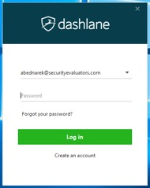
Figure 11. Locked instance of Dashlane.
In this locked state, we then run our proof of concept to extract all stored secrets (Figure 12).
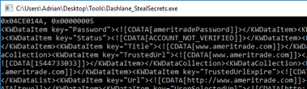
Figure 12. Extracting secrets from a locked instance of Dashlane.
However, even though we are able to extract secrets from a locked state of Dashlane, the memory region they reside in has been dereferenced and freed. So, over time portions of the XML data structure may be overwritten. Throughout our examination, we noticed that secrets may reside for a few minutes. In some instances, we have observed them still resident in memory more than 24 hours.
Dashlane is also unique compared to the other password managers in our examination in that it does not allow you to exit the process via GUI components, such as clicking the close program [x] in the upper right or pressing the ALT-F4 key combination. Doing so causes Dashlane to minimize into the task tray, leaving it susceptible to secrets extraction for extended periods of time.
KeePass (Version: 2.40)
Unlike the other password managers, KeePass is an open source project. Similar to 1Password4, KeePass decrypts entries as they are interacted with, however, they all remain in memory since they are not individually scrubbed after each interaction. The master password is scrubbed from memory and not recoverable. However, while KeePass attempts to keep secrets secure by scrubbing them from memory, there are obviously errors in these workflows as we have discovered that while even in a locked state, we were able to extract entries that had been interacted with.
KeePass claims to use several defenses in depth memory protection mechanisms as stated in an excerpt from their site below (Figure 13). However, they acknowledge that these workflows may involve Windows OS API’s that may make copies of various memory buffers which may not be exposed to KeePass for scrubbing.
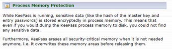
Figure 13. KeePass statement on memory protection.
Exposure of Cleartext Entries in Memory
Entries that have been interacted with remain exposed in memory even after KeePass has been placed into a locked state. Figure 14, below, is an example of a locked instance of KeePass prompting for the master password before it can be unlocked.
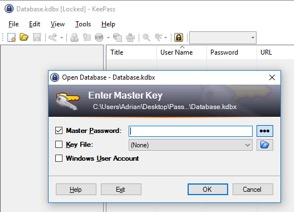
Figure 14. Locked instance of KeePass.
Secrets are scattered in memory with no references. However, performing a simple strings dump from the process memory of KeePass reveals a list of entries that have been interacted with (Figure 15).
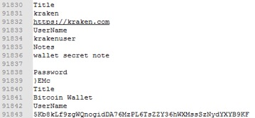
Figure 15. List of entries from a locked instance of KeePass.
Using the above information, we can then search for a username to an entry and locate its corresponding password field entry, in the below image (Figure16) we locate the bitcoin private key which was stored in the password field.
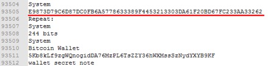
Figure 16. Locating a bitcoin private key via its corresponding public key/username.
The above methodology can be used to extract any entries that have been interacted with before placing KeePass into a locked state.
LastPass (Version: 4.1.59)
Similar to 1Password4, LastPass obfuscates the master password as its being typed into the unlock field. Once the decryption key has been derived from the master password, the master password is overwritten with the phrase “lastpass rocks” (Figure17).
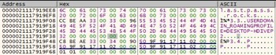
Figure 17. Master password overwritten once the master password has been used in a PBKDF2 key expansion routine.
Once LastPass enters an unlocked state, database entries are decrypted into memory only upon user interaction. However, these entries persist in memory even after LastPass has been placed back into a locked state.
Exposure of Cleartext Master Password and Entries in Memory
During a workflow to derive the decryption key, the master password is leaked into a string buffer in memory and never scrubbed, even when LastPass is placed into a locked state.
The below image, Figure 18, is an instance of LastPass in a locked state awaiting user entry of the master password.
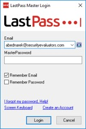
Figure 18. Locked instance of LastPass.
In this locked state, we can recover the master password and any interacted with password entries with the same methodology used in KeePass, in which a simple strings dump was performed on the active process.
The image below, Figure19, is an example of recovering the master password, in a locked state, which ironically is always found within a few lines of ‘lastpass rocks’, the phrase used to conceal the master password in another buffer.
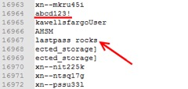
Figure 19. Master password in cleartext (underlined red) typically within a few lines of ‘lastpass rocks’.
Strings encapsulated by a ‘<input hwnd=’ tag will allow us to enumerate all secret entries that have been interacted with. Below, Figure 20, is an example of extracting a private key to a bitcoin wallet.
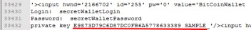
Figure 20. Extracting a bitcoin private key from a locked instance of LastPass.
Conclusion:
All password managers we examined sufficiently secured user secrets while in a ‘not running’ state. That is, if a password database were to be extracted from disk and if a strong master password was used, then brute forcing of a password manager would be computationally prohibitive.
Each password manager also attempted to scrub secrets from memory. But residual buffers remained that contained secrets, most likely due to memory leaks, lost memory references, or complex GUI frameworks which do not expose internal memory management mechanisms to sanitize secrets.
This was most evident in 1Password7 where secrets, including the master password and its associated secret key, were present in both a locked and unlocked state. This is in contrast to 1Password4, where at most, a single entry is exposed in a ‘running unlocked’ state and the master password exists in memory in an obfuscated form, but is easily recoverable. If 1Password4 scrubbed the master password memory region upon successful unlocking, it would comply with all proposed security guarantees we outlined earlier.
This paper is not meant to criticize specific password manager implementations; however, it is to establish a reasonable minimum baseline which all password managers should comply with. It is evident that attempts are made to scrub and sensitive memory in all password managers. However, each password manager fails in implementing proper secrets sanitization for various reasons.
The image below, Figure 21, summarizes the results of our evaluation:
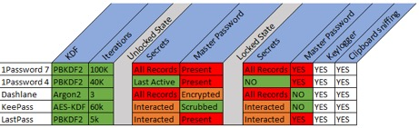
Figure 21. Summary of each password managers security items we examined.
Keylogging and Clipboard sniffing are known risks and only included for user awareness, that no matter how closely a password manager may adhere to our proposed ‘Security Guarantees’, victims of keylogging or clipboard sniffing malware/methods have no protection. However, significant violations of our proposed security guarantees are highlighted in red. In an unlocked state, all or a majority of secret records should not be extracted into memory. Only a single one, being actively viewed, should be extracted. Also, in an unlocked state, the master password should not be present in either an encrypted or obfuscated form.
A locked running state that exposes interacted with or all records puts users’ secret records unnecessarily at risk. Most egregious is the presence of a master password in a locked state.
It is unknown how widespread this knowledge is amongst adversaries. However, up to 60 million users of these password managers potentially are at risk of a targeted attack directed at the software that is meant to safeguard their secrets.
In our opinion, the most urgent item is to sanitize secrets when a password manager is placed into a locked state. Typically, most password managers place themselves into this locked state after a certain period of user inactivity, after this the process may remain indefinitely either until the OS is restarted, the process is terminated by the user, or the process restarts itself as part of a self-update workflow when a new version is published. This creates a large window of time in which secrets for certain password managers reside cleartext in memory and available for extraction.
In addition to providing a minimum set of guarantees users can rely on, creators of password managers should employ additional defenses to protect secrets by:
- Detecting or employing methods to, by default, thwart software based keyloggers
- Preventing secrets exposure in an unlocked state
- Employing hardware-based features (such as SGX) to make it more difficult to extract secrets
- Employing trivial malware and runtime process modification detection mechanisms
- Employing per-install binary scrambling during the install phase to make each instance a unique binary layout to thwart trivial and advanced targeted malware
- Limiting the traversal of secrets to OS provided APIs by implementing custom GUI elements and memory management to limit secrets exposure to well-known APIs that can be targeted by malware authors
End users should, as always, employ security best practices to limit exposure to adversarial activity, such as:
- Keeping the OS updated
- Enabling or utilizing well known and tested anti-virus solutions
- Utilizing features provided by some password managers, such as “Secure Desktop”
- Using hardware wallets for immediately exploitable sensitive data such as crypto currency private keys
- Utilizing the auto lock feature of their OS to prevent ‘walk by’ targeted malicious activity
- Selecting a strong password as the master password to thwart brute force possibilities on a compromised encrypted database file
- Using full disk encryption to prevent the possibility of secrets extraction in the event of crash logs and associated memory dumps which may include decrypted password manager data
- Shutting a password manager down completely when not in use even in a locked state (If using one that doesn’t properly sanitize secrets upon being placed into a locked running state)
Future Research:
Password managers are an important and increasingly necessary part of our lives. In our opinion, users should expect that their secrets are safeguarded according to a minimum set of standards that we outlined as ‘security guarantees’. Initially our assumption and expectation were that password managers are designed to safeguard secrets in a ‘non-running state’, which we identified as true. However, we were surprised in the inconsistency in secrets sanitization and retention in memory when in a running unlocked state and, more importantly, when placed into a locked state.
If password managers fail to sanitize secrets in a locked running state then this will be the low hanging fruit, that provides the path of least resistance, to successful compromise of a password manager running on a user’s workstation.
Once the minimum set of ‘security guarantees’ is met then password managers should be re-evaluated to discover new attack vectors that adversaries may use to compromise password managers and examine possible mitigations for them.
References:
| [1] | "1Password," [Online]. Available: https://1password.com. |
| [2] | "Dashlane," [Online]. Available: https://www.dashlane.com/. |
| [3] | "KeePass," [Online]. Available: https://keepass.info/. |
| [4] | "LastPass," [Online]. Available: https://www.lastpass.com/. |
| [5] | T. Hunt. [Online]. Available: https://www.troyhunt.com/password-managers-dont-have-to-be-perfect-they-just-have-to-be-better-than-not-having-one/. |
| [6] | "https://twitter.com/roustem," [Online]. |
| [7] | "https://blog.dashlane.com/10-million-users/," [Online]. |
| [8] | "https://keepass.info/help/kb/trust.html," [Online]. |
| [9] | "https://www.lastpass.com/," [Online]. |
| [10] | D. Florencio, C. Herley and P. C. v. Oorschot, "An Administrator’s Guide to Internet Password Research," [Online]. Available: https://www.microsoft.com/en-us/research/wp-content/uploads/2014/11/WhatsaSysadminToDo.pdf. |
| [11] | T. L. Bras, "Online Overload – It’s Worse Than You Thought," [Online]. Available: https://blog.dashlane.com/infographic-online-overload-its-worse-than-you-thought/. |
| [12] | "Smart Taylor," [Online]. Available: https://smarttaylor.io/. |
| [13] | Taylor. [Online]. Available: https://medium.com/smarttaylor/updates-on-the-taylor-hack-incident-8843238d1670. |
| [14] | [Online]. Available: http://nvlpubs.nist.gov/nistpubs/Legacy/SP/nistspecialpublication800-132.pdf. |
| [15] | [Online]. Available: https://support.1password.com/pbkdf2/. |
| [16] | "https://support.1password.com/pbkdf2/," [Online]. |
| [17] | "https://www.dashlane.com/download/Dashlane_SecurityWhitePaper_October2018.pdf," [Online]. |
| [18] | "https://keepass.info/help/base/security.html," [Online]. |
| [19] | "LastPass," [Online]. Available: https://blog.lastpass.com/2018/07/lastpass-bugcrowd-update.html/. |
| [20] | J. Goldberg, "Using Intel’s SGX to keep secrets even safer," [Online]. Available: https://blog.1password.com/using-intels-sgx-to-keep-secrets-even-safer/. |
| [21] | "1Password support forum," [Online]. Available: https://discussions.agilebits.com/discussion/87834/intel-sgx-stopped-working-its-working-but-the-option-is-not-in-yet. |